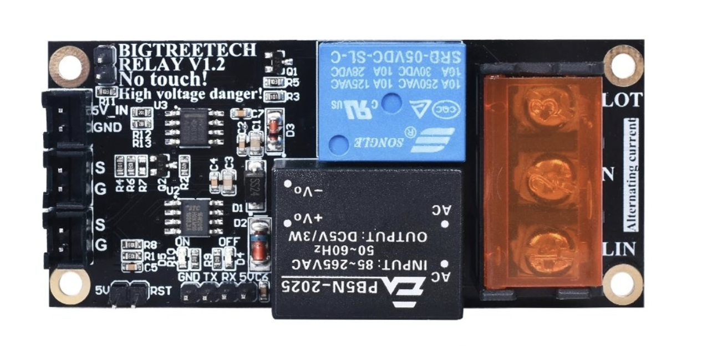

Programming, electronics, lifestyle
Всем привет, в этой статье речь пойдет о подключении модуля реле BigTreeTech Relay v1.2 к SKR 2.0.
Основные ссылки:

Для начала предлагаю разобраться из каких частей состоит этот прибор и как он работает.
Первое, что бросается в глаза это крупный оранжевый разъём питания и синее реле. Работает это интуитивно понятно – реле размыкает и замыкает цепь питания LIN и LOT. Средний вход N используется вместе с LIN для питания самого прибора через преобразователь питания в черном корпусе.
Далее идет логическая часть и 6 разъёмов. Пройдемся по ним с левого верхнего угла по направлению против часов стрелки:
SC_EN DuPont 2pin – место для установки перемычки, замкнутые разъёмы включают функцию детекции короткого замыкания в цепи.SC_DET JST 2pin – разъём для обнаружения короткого замыкания в 5 вольтовой цепи (в случае короткого замыкания прибор немедленно разорвёт цепь питания).PS_ON_IN JST 2pin – основной интерфейс для подключения к контроллеру принтера и управления прибором.PS_DET JST 2pin – обнаружение отключения питания.RESET DuPont 2pin – интерфейс для перезагрузки модуля (полагаю, как для включения принтера, так и для перепрошивки).UART DuPont 4pin – UART интерфейс (для перепрошивки).При первичной подаче питания реле у прибора замкнуто в течении 10 секунд, если в этот промежуток на PS_ON_IN не будет дан высокий логический уровень с контроллера принтера. Прибор разорвет цепь питания. Для последующего включения которого, будет нужно либо, замкнуть разъём RESET или переподать питание на модуль.
Когда включена функция детекции короткого замыкания, и в случае такового на SC_DET модуль отключает питание.
Единственное, что мне не совсем понятно как работает функция обнаружения отключения питания. Я дополню статью как разберусь.
Чтобы включить работу с модулем в Marlin нужно:
В директории src/pins/<controller_family>/pins_<board>.h нужно определить к какому пину подключен прибор.
#define PS_ON_PIN PE8
Установить следующие опции в Configuration.h
#define PSU_CONTROL
#define PSU_NAME "Power Supply"
#define PSU_ACTIVE_STATE HIGH
G4 S900 ; подождать 900 сек
M81 ; выкл питания